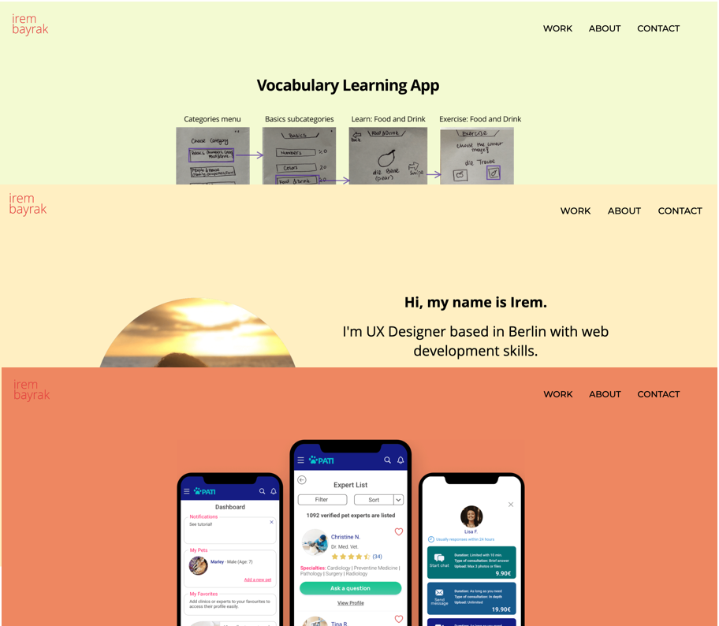
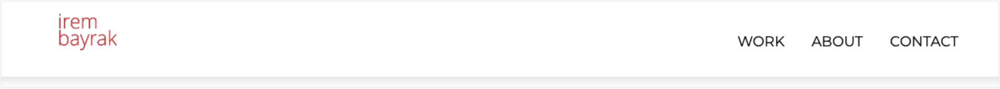
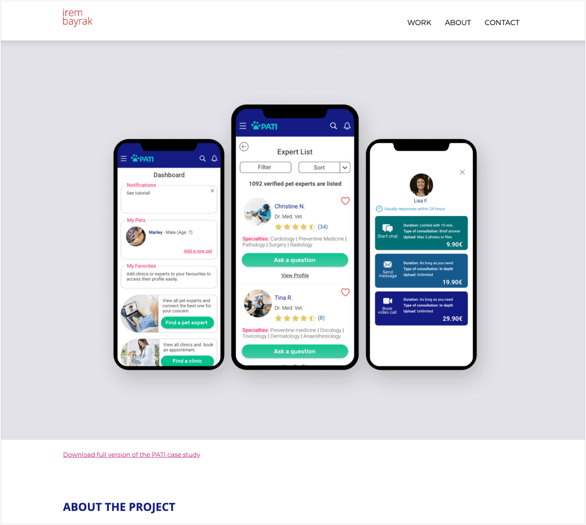
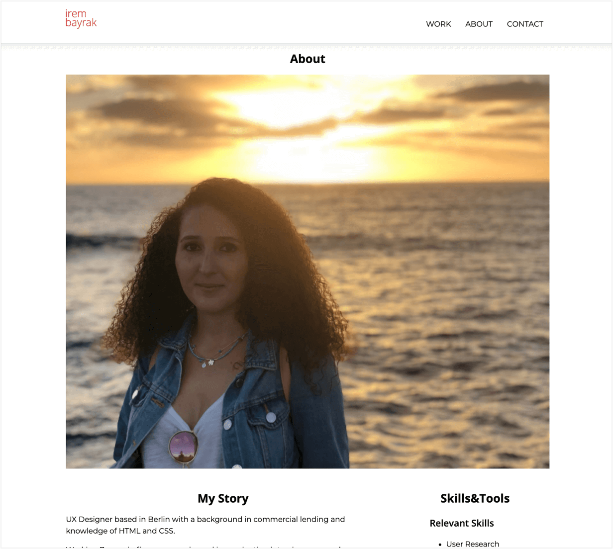
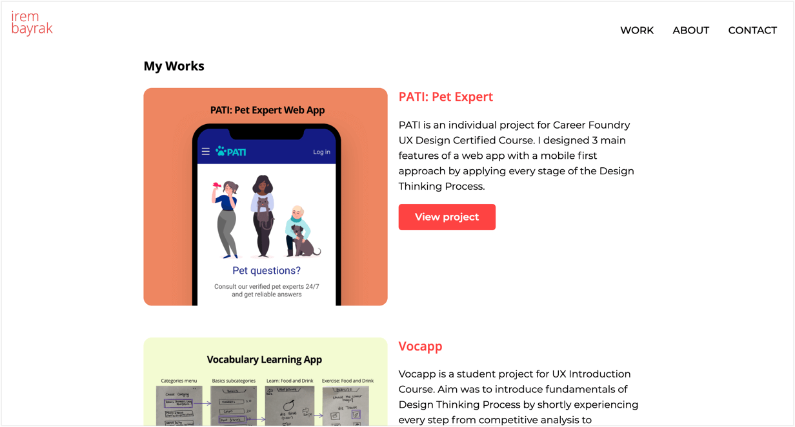

ABOUT THE PROJECT
My goal in this project was to be ready for job hunting by having my portfolio website and gaining coding skills to stand out in the job market.
Building my own responsive website from scratch, I had the opportunity to get an understanding of HTML, CSS, and JavaScript and design a website by focusing on the needs of recruiters and managers in tech industry.
Timeline
June-Aug 2020
CONTEXT
The design thinking process involves creating solutions to user’s problems by considering business requirements and technological possibilities.
As I recently completed UX Bootcamp, now I have a good understanding of the user-centered design and all phases of the UX.
With 7 years of experience in finance, I collaborated with different stakeholders including clients, sales team, marketing, and risk management teams. So I’m also experienced in working with achieving business success in mind.
To be able to grasp the limits of technology and better communicate with developers, I took Frontend Development for Designers certified course at Career Foundry.
Having my portfolio website also allowed me to have my personal space to showcase my projects and skills to attract recruiters and managers in the tech world.
The Problem
As a UX designer that transitioning from finance, I want to stand out by gaining new skills to land my dream job in the near future.
The Goals
My main goals were to learn coding by designing a website that;
is responsive to allow users viewing my website on any device without losing usability
has a clear and straightforward navigation system
enables users access every information would need such as my projects, social media accounts, a way to contact me, my resume
allows recruiters and managers to complete tasks easily
PROCESS
I began my design process by analyzing other UX Designers’ portfolio websites to get some inspiration and see how they present their work, how is their navigation structure, and what content they have.
Then I decided to use the wireframes provided by the course because it was prepared considering trends and the needs of recruiters and hiring managers. Following same layout with the course also allowed me to focus on writing clean and readable code.
While following the same structure with the course, I was free to use any styling I wanted to. I decided to use a white background to keep the website legible and readable but bright colors for buttons and project screenshots to make them easy to notice.
Navigation
It was important to keep my navigation simple, clear, and always accessible. For this reason, I used a fixed header and only 3 items on the navigation bar.
Challenge #1
My initial intention was to have a transparent navigation bar with the same background color as the section below it for every page. I also wanted to adjust the content width to keep it between the logo and menus. This way content and elements in the header wouldn’t overlap, menus would still be legible and I would have an appealing header.
The problem: It didn’t work on mobile. On mobile, the transparent menu was causing overlapping text which makes it hard to read for everyone.
Defining different styling for smaller screen sizes by using media queries didn’t work either because when scrolled JS overrode CSS styling.
The solution: Because my main goal was building a responsive, usable website to showcase my work, design thinking and process, and also my JS skills were limited due to course scope, I decided to use a header with white background and shadow that shrinks on scroll to dedicate more space to content.
Challenge #2
For mobile devices, I used a hamburger menu and a transition between states (three bars when closed, X when opened).
The problem: Work and Contact menus were anchor links. Because these links were keeping users on the same page, the hamburger icon didn’t transform to its initial state.
I did a web search to fix my problem and tried to find a similar problem other people had to get an idea but I couldn’t.
The constrains:Time was an important constraint. Because I needed to focus on my main goal, getting a job.
The solution:I identified 3 possible solutions;
- using only the bar icon for both states, so there would be no transition and no issue
- using two different headers, one for large screen sizes, one for mobile devices
- instead of pursuing the best solution, coming up with an alternative solution to make it work
I wanted to keep X state because it signals to users that they can close the menu by clicking it. Because of the time constraint, I needed to think of a practical solution instead of pursuing the best one technically.
My solution was to add a code to reverse the hamburger icon transition, so I added classes to anchor links (work & contact) and define a rule to reverse animation of the hamburger icon when they’re clicked via JS.
Homepage
For homepage, my goal was to provide an overview at a glance by having a short introduction about me, a screenshot, and short info about my projects, contact section, and links to projects and my about page in case they want to see more about me.

Contact section
Main aim of my website is to impress potential employers and recruiters and finally get me hired. So it’s important for me to make them easily reach me. That’s why I kept the contact section on every page as a footer.

Project page
For my main project (PATI), I used a summarized version of my case study on my website to keep it more readable. I also added a link to download the full version in case users want to see more about the project.
About page
For my main project (PATI), I used a summarized version of my case study on my website to keep it more readable. I also added a link to download the full version in case users want to see more about the project.
Usability Tests
After I finished coding the first version of my website, I started to conduct usability tests to see how people interact with my website.
I tried to recruit participants among managers and recruiters who work in a digital agency or an IT company.
5 participants
4 remote
1 in person
2 devices
4 laptop
1 mobile
2 browsers
3 Chrome
2 Safari
Test Insights
By using Jakob Nielsen’s severity rating for usability problems, I identified 4 main issues regarding the test participants' feedback.
- The images on the homepage, about page and project pages, were too large that users’ needed to scroll down to see the content which frustrated all of them.
- The animation at homepage assumed to be another project because it shared the same layout with projects above it.
- Hero section at homepage was too flat and text amount in general (hero section and project pages) disturbed 3 participants.
- Work link on navigation bar confused users because it was linking to the homepage so nothing happened when they clicked it on the homepage.
Reiteration
The next step was to fix the most severe and frequent issues and refine the website.
Issue #1- The image sizesTo balance the image and information next to it in the work section, I changed the grids dedicated to image and text.
I also used 960px max-width instead of 1200px.
This way people were enabled to see two projects on one page.
I removed animation because it was not serving its purpose and caused confusion. I also believed that I can still show my animating skills on the navigation bar.
Issue #3- The hero section and text amountI redesigned my hero section including my image, a short introduction, and more descriptive links to the work section and about me page. I benefited from different font weights and sizes on text to ease readability and show hierarchy.
I also decided to give a different background to hero section as I did at footer section.
At the Pati project page, I replaced texts with visuals at user interview insight and user feedback sections to not overwhelm users with text amount and prevent them to quit the page.
To eliminate confusion, I changed the code and used Work link as an anchor link to work section at homepage. With this update, work link takes users to related section so they can notice the interaction even if they are at homepage.
CONCLUSION
Learning web development by building my responsive portfolio website was challenging but yet encouring and supplementary.
- Being able to see the impact of what you wrote immediately was exciting because I could play with it as I like and see how it looks.
- To be aware of what is feasible technologically enabled me to gain a new point of view. I believe this new perspective will help me to be a better designer.
- Realizing again that practicing, researching and trying new things make everything better motivated me as I will start job hunting.